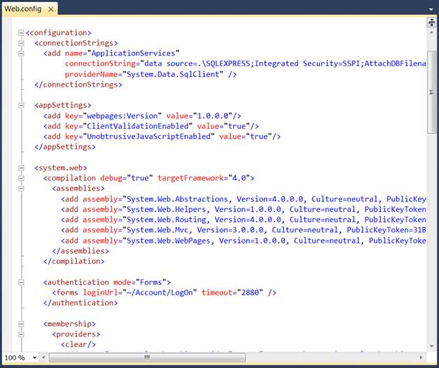

1. On the Solution Explorer, double-click the Web.config file (There will be two Web.config files. Refer to the one in the root folder).
 Note: The
Web.config page appears.
Note: The
Web.config page appears.

Figure 22: Web.config Page
2. Add the following assemblies in the Web.config page under the <compilation> tag: Syncfusion.Core, Syncfusion.Mobile.Shared.Mvc, and Syncfusion.Mobile.Grid.Mvc.
|
[Web.config]
<system.web> <compilation debug="true" targetFramework="4.0"> <assemblies> ………… …………
<add assembly="Syncfusion.Core, Version=x.x.x.x, Culture=neutral, PublicKeyToken=632609b4d040f6b4"/> <add assembly="Syncfusion.Mobile.Shared.Mvc, Version=x.x.x.x, Culture=neutral, PublicKeyToken=3d67ed1f87d44c89"/> <add assembly="Syncfusion.Mobile.Grid.Mvc, Version=x.x.x.x, Culture=neutral, PublicKeyToken=3d67ed1f87d44c89"/> </assemblies> </compilation> </system.web> |
Note: X.X.X.X
in the above code corresponds to the correct version number of the Essential
Studio version that you are currently using.
3. Add the Syncfusion.Mobile.Shared.Mvc, Syncfusion.Mobile.Grid.Mvc, and Syncfusion.Mobile.Tools.Mvc namespaces under the <namespaces> tag.
|
[Web.config]
<system.web> <pages> <namespaces> ………. ………. <add namespace="Syncfusion.Mobile.Shared.MVC"/> <add namespace="Syncfusion.Mobile.Tools.Mvc"/> <add namespace="Syncfusion.Mobile.Grid.Mvc"/> </namespaces> </pages> </system.web>
|
4. Register the handlers under
the <httphandlers> and <handlers> tags in the
Web.config file by using the code below:
|
[Web.config]
<system.web> ……….. ……….. <httpHandlers> <add verb="GET,HEAD" path="MobMvcResourceHandler.axd" type="Syncfusion.Mobile.Shared.MVC.MobMvcResourceHandler, Syncfusion.Mobile.Shared.MVC, Version=x.x.x.x, Culture=neutral, PublicKeyToken=3d67ed1f87d44c89" validate="false"/> </httpHandlers> </system.web>
…….. <system.webServer> ……. ……. <handlers> <remove name="MobMvcResourceHandler"/> <add verb="GET,HEAD" name="MobMvcResourceHandler" path="MobMvcResourceHandler.axd" type="Syncfusion.Mobile.Shared.MVC.MobMvcResourceHandler, Syncfusion.Mobile.Shared.MVC, Version=x.x.x.x, Culture=neutral, PublicKeyToken=3d67ed1f87d44c89"/> </handlers> </system.webServer>
|
Note: In VS2010,
<httpHandlers> and <handlers> are registered inside
the machine.config file. For more information refer to Clean Web.config
files.
5. Add the <httpHandlers> and <handlers> tags under <system.web> and <system.webServer> respectively.
Note: X.X.X.X in the above code corresponds to
the correct version number of the Essential Studio version that you are
currently using.